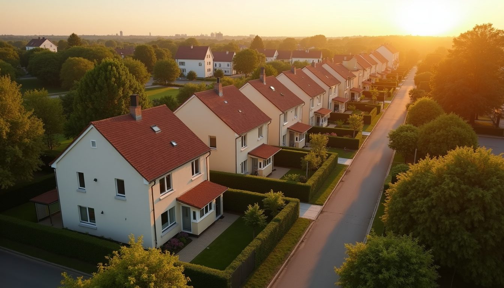
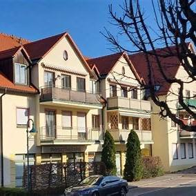
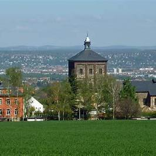
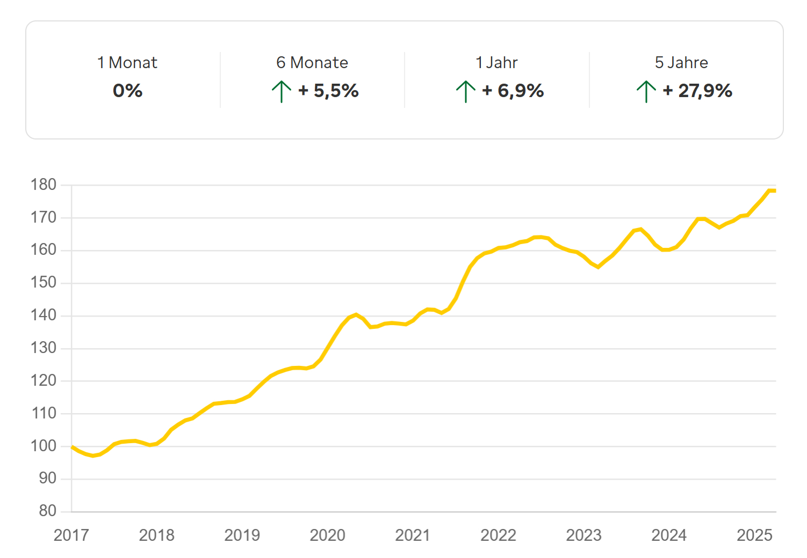
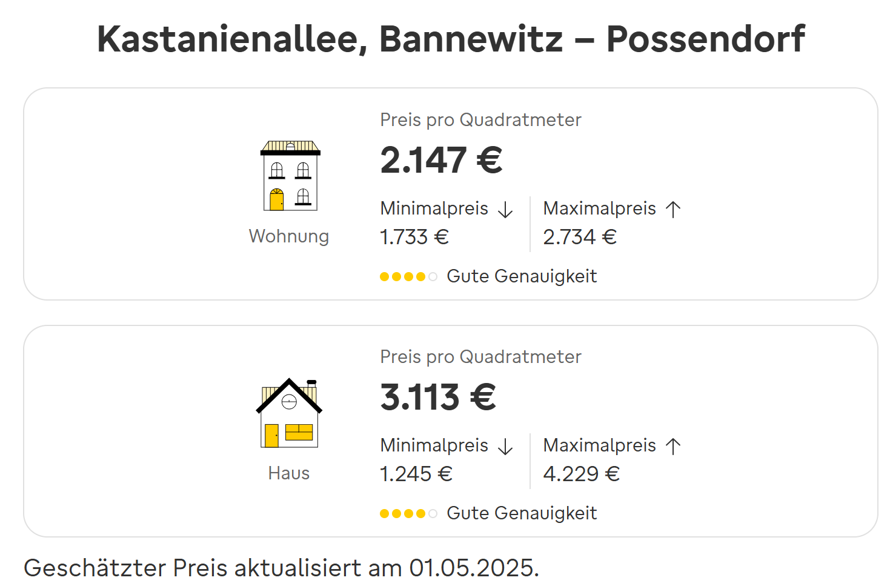

Bannewitz, eine charmante Gemeinde in der Nähe von Dresden, ist nicht nur ein malerischer Ort zum Leben, sondern auch eine vielversprechende Option für Immobilieninvestitionen. Hier gibt es eine Vielzahl von Wohnimmobilien, die sich als rentable Investitionsmöglichkeiten erweisen können.

Bannewitz – Wo sich Lebensqualität und Investition die Hand reichen
Wer an einem Spätsommerabend durch Possendorf spaziert, spürt sofort den besonderen Charakter dieser Region. Nur wenige Autominuten südlich von Dresden gelegen, hat sich Bannewitz mit Ortsteilen wie Possendorf, Goppeln oder Rippien in den letzten Jahren vom verschlafenen Vorort zur gefragten Wohn- und Investitionsgemeinde entwickelt. Aber was macht diesen Ort eigentlich so besonders – für Familien genauso wie für Kapitalanleger?
Nähe zur Stadt, Luft zum Atmen
Zentraler Vorteil Bannewitz’ ist seine Lage: Wer zum Beispiel in der Gartenstraße in Bannewitz wohnt, genießt morgens den Blick über die Felder – und steht dennoch in unter 15 Minuten in der Dresdner Altstadt oder an der TU Dresden. Für Berufspendler ist das ein echter Luxus, den viele Stadtbewohner schmerzlich vermissen: Ruhe, frische Luft, kurze Wege.
Bannewitzer Vielfalt: Mehr als nur ein Vorort
Bannewitz ist keine gesichtslose Gemeinde – jeder Ortsteil hat seinen eigenen Charakter. In Rippien geht es traditionell und fast ländlich zu; hier kennt man seine Nachbarn und trifft sich regelmäßig auf dem Dorfplatz zum Feste feiern. Der Ortsteil Possendorf bietet mit seiner Grundschule, Sporthalle und der Einkaufszone am Markt eine gute Infrastruktur für junge Familien. Besonders schön: das Fest "Possendorfer Herbst", bei dem lokale Künstler, Vereine und Gastronomen das Dorf für ein Wochenende in eine bunte Feiermeile verwandeln.
Nicht zu vergessen: Der historische Marienschacht im Ortsteil Boderitz– einst ein Steinkohle-Bergwerk, heute ein Denkmal mit Veranstaltungsort. Hier finden regelmäßig Führungen, Lesungen und Sommerkonzerte statt. Gerade dieses Zusammenspiel aus Geschichte, Kultur und Dorfgemeinschaft macht Bannewitz für viele so charmant.

Warum hier investieren? Drei Gründe, die überzeugen
-
Solide Mietnachfrage, besonders bei Familien und Berufspendlern
Die Nachfrage nach Wohnungen und Häusern – besonders im Eigentum – ist in den letzten Jahren gestiegen. Grundstücke im Bereich "Käferberg" oder neue Baugebiete rund um die Kirschallee in Bannewitz sind oft schnell vergeben. Familien schätzen die Nähe zu Kindergärten, die gute Busanbindung an Dresden und das sichere Wohnumfeld.
-
Wertstabile Immobilienpreise mit Wachstumspotenzial
Im Vergleich zu Dresden ist Bannewitz noch günstig – aber die Entwicklung ist klar: In den letzten Jahren stiegen die Immobilienpreise hier stetig.

Preisentwicklung Häuser in Bannewitz, Quelle: Preisatlas Immowelt, Stand 05/2025 Eigentumswohnungen oder Doppelhaushälften in zentralen Lagen wie der Kastanienallee erzielen solide Quadratmeterpreise, bei gleichzeitig stabiler Vermietbarkeit. Wer hier heute kauft, sichert sich langfristige Wertentwicklung.

Quadratmeterpreise Possendorf, Kastanienallee, Quelle: Immowelt Preisatlas, Stand 05/2025 -
Aktive Gemeindeentwicklung
Die Gemeindeverwaltung von Bannewitz investiert: Spielplätze werden modernisiert, der Breitbandausbau geht voran, die Schulen wie die Grundschule Possendorf oder die Oberschule Bannewitz erfahren kontinuierliche Verbesserungen. Auch das Gewerbegebiet rund um die B170 wächst. Neue Unternehmen bringen Arbeitsplätze und stärken den Standort wirtschaftlich – ein gutes Zeichen für Investoren.
Typisch Bannewitz: Zwischen Dorfcharme und Lebensqualität
Was das Leben in Bannewitz so besonders macht, ist diese gelungene Balance: Einerseits trifft man sich auf dem Sommerfest des Heimatvereins Goppeln zu Bratwurst und Blasmusik, andererseits sitzen junge Familien am Wochenende im Café “Katrin Wander” auf der Windbergstraße bei leckerem Eis, Cappuccino und Kuchen beisammen. Und wer es etwas sportlicher mag, kann über Börnchen zum Rabenauer Grund bis in den Tharandter Wald wandern oder im Sportpark Bannewitz den Fußballern beim Spiel zu sehen. Und auch Kunst- und Kulturbegeisterte finden ihren Platz: Die KulturTankstelle Bannewitz bietet mit Konzerten, Kursen, Ausstellungen und kreativen Mitmachformaten einen Ort der Begegnung und Inspiration – für alle Generationen.
Ein Zukunftsort mit Herz
Bannewitz ist vieles – aber vor allem ein Ort mit Perspektive. Für Investoren bedeutet das: Wer in Immobilien investiert, kauft hier nicht nur Ziegel und Quadratmeter. Man investiert in eine lebendige Gemeinde, die wächst, sich verändert – aber dabei nie ihre Bodenständigkeit verliert.
Ob es das Mehrfamilienhaus in Cunnersdorf ist, das durch seine Nähe zu Einkaufsmöglichkeiten besonders für Familien attraktiv ist, oder ein freistehendes Einfamilienhaus im Ortsteil Wilmsdorf mit Blick über das Elbtal: Bannewitz bietet zahlreiche Chancen – für Eigennutzer wie für Kapitalanleger.
Fazit: Bannewitz – die kluge Wahl für Immobilieninvestoren
Bannewitz ist längst kein Geheimtipp mehr. Die Kombination aus Nähe zur Stadt, hoher Lebensqualität, gewachsener Infrastruktur und einer engagierten Gemeinde macht die Region für Investoren äußerst attraktiv. Wer heute klug anlegen will, findet in Bannewitz nicht nur stabile Renditen, sondern auch eine Investition in Lebensqualität.
Tipp zum Schluss: Wer die Region kennenlernen will, sollte zum nächsten "Teichfliegen 2025" in Possendorf kommen.
Ihre Immobilie in Bannewitz – jetzt kostenlos bewerten lassen
Möchten Sie wissen, was Ihre Immobilie aktuell wert ist? Ich erstelle Ihnen eine kostenlose, unverbindliche Markteinschätzung – persönlich, lokal und mit echter Marktkenntnis aus Bannewitz.
Ihre Janine Kreiser – Ihre Immobilienexpertin für Bannewitz und Umgebung.